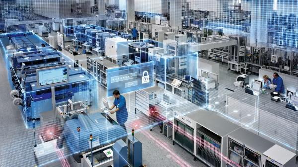

Digital Twins are revolutionizing business practices
Imagine you have a perfect digital copy of your product, process
or manufacturing line. You could test various usage modes, stress
levels or configurations and better predict outcomes. Without the
risk and costs of disturbing your on-going business!

Change2Twin is a EU-funded project (part of I4MS) which helps
manufacturing SMEs in their digitization efforts to deploy digital
twins. We are a consortium of 18 partners from all over Europe and we
believe that the concept of digital twin is one of the big game-changers
in manufacturing allowing companies to significantly increase their
global competitiveness.
*What Target groups